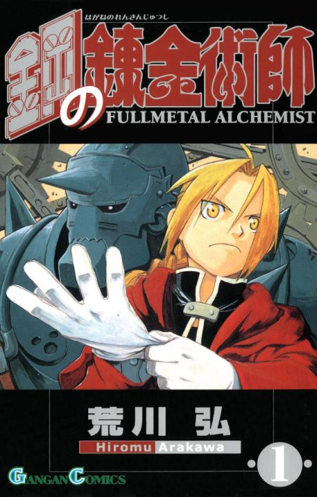

Fullmetal Alchemist: Brotherhood
The anime covers the whole manga.
Arcs
Episodes numbered 1–64 in broadcast order; the series is a single 64-episode run.
Liore and the Sewing-Life Alchemist
Brothers Edward and Alphonse Elric lost their bodies trying to bring back their mother with alchemy, and now hunt for the Philosopher's Stone to fix it.
Scar and Laboratory 5
A scarred Ishvalan man is killing State Alchemists, and the brothers follow Dr. Marcoh's research to an abandoned lab.
Hughes, Rush Valley and Dublith
After a shocking loss in Central, the brothers return to their alchemy teacher Izumi for answers.
Visitors from Xing and Lust's End
Travelers from the eastern country of Xing arrive seeking immortality as Roy Mustang closes in on Hughes's killers.
Hunting Scar and Inside Gluttony
The Elrics' father Hohenheim resurfaces while the brothers set a trap for Scar and the homunculi.
Father and the Ishval War
The brothers meet the homunculi's creator and learn how the Ishval genocide fits a much larger plan.
Fort Briggs
The brothers head north to Fort Briggs, a fortress run by Major General Olivier Armstrong.
Preparing the Counterattack
Allies across the country make their moves as the Promised Day approaches.
The Promised Day
Mustang's coup and the homunculi's plans collide in Central on the day of the solar eclipse.
Final Battle
Father begins his nationwide transmutation, and everyone left must stop him.